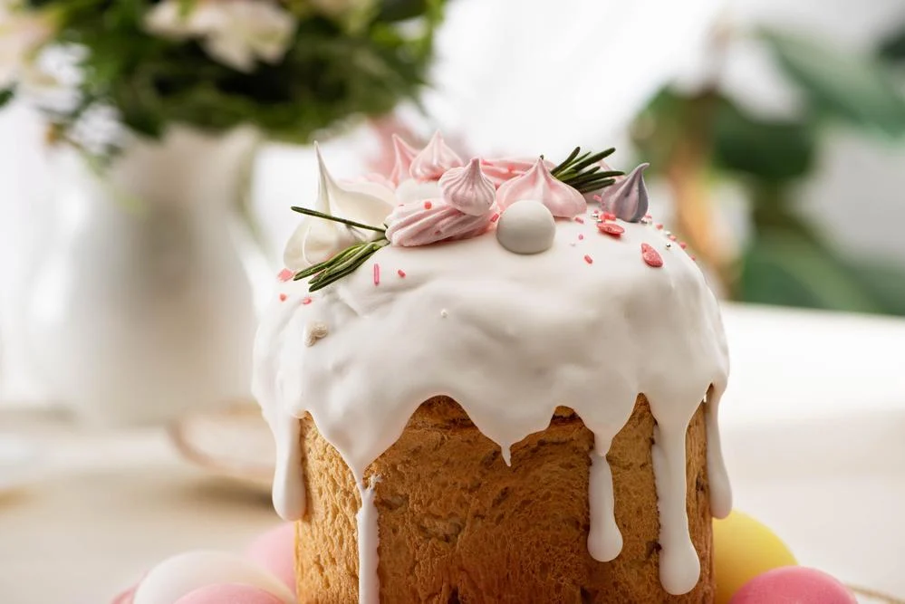

Як відзначають Великдень в Україні: головні великодні традиції

Великодні традиції в Україні об'єдналися в давніми звичаями дня весняного рівнодення.Готуватися до Великодня в Україні починають заздалегідь, коли тримають довгий Великий піст. Останній тиждень перед Великоднем називали Білим - за цей тиждень прибирали будинок, перемивали всі поверхні і прикрашали хату рушниками. У Чистий четвер перед Великоднем обов'язково милися всією сім'єю.На Великдень в Україні готують ритуальну випічку - паски. У паски додають побільше яєць, щоб тісто було насиченого жовтого кольору - це символізує сонце. Зверху паски прикрашали фігурками птахів і квітів, що позначало весну і родючість.Під час запікання пасок господині забороняли домашнім ходити біля печі, провітрювати кімнату і грюкати
дверима - вважалося, що через протяг тісто не підніметься. Доброю прикметою вважалося, якщо паска високо підніметься і рівномірно пропечеться - це означає щастя і благополуччя для всієї родини.Ще одним символом Великодня в Україні є верба. Гілки та верби вносять в будинок ще на Вербний тиждень, а потім прикрашають ними будинок до Великодня. Чому саме верба? Справа в тому, що коли Ісус в'їжджав в Єрусалим, місцеві жителі вітали його, кидаючи на дорогу пальмові гілки. Оскільки в Україні не ростуть пальми, то їх замінили верби.Третій відомий символ Великодня - крашанки. Розписані і пофарбовані яйця символізують життя, сонце і воскресіння. В Україні добре розвинене мистецтво крашанок і писанок.У сам день Великодня
прийнято збирати в кошик різні продукти, паски і крашанки. Всією сім'єю йдуть до церкви на богослужіння і святять там продукти. Потім вдома вся сім'я сідає за святковий стіл, а трапезу обов'язково починає з пасхального яйця. На десерт їдять паски і намагаються, щоб жодна крихта не впала на підлогу.